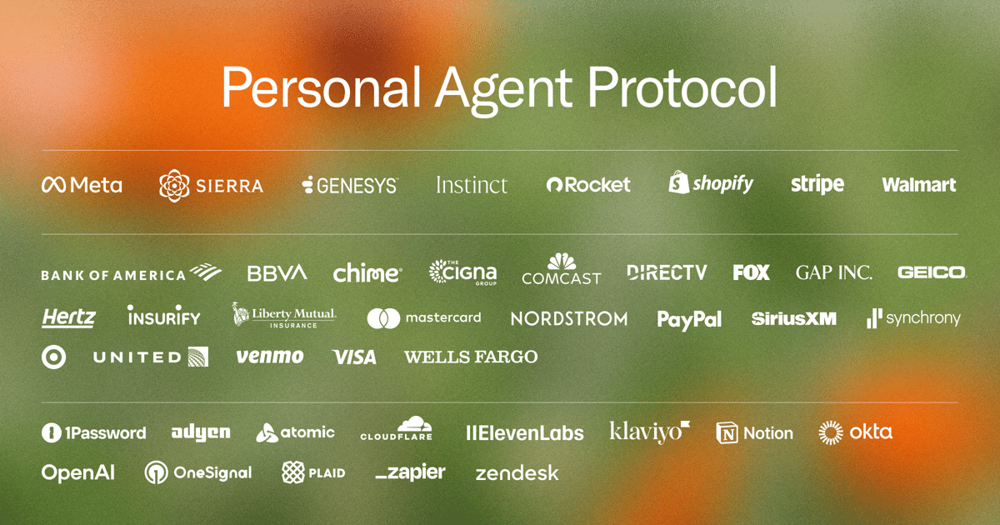
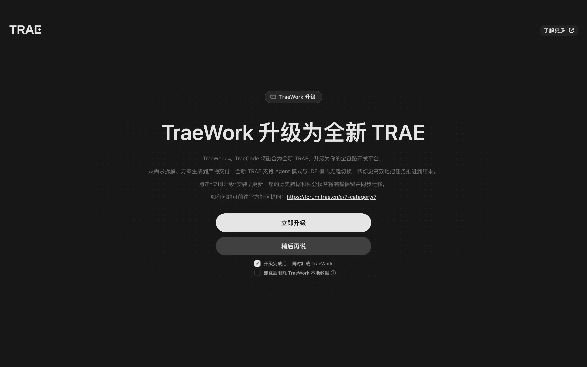
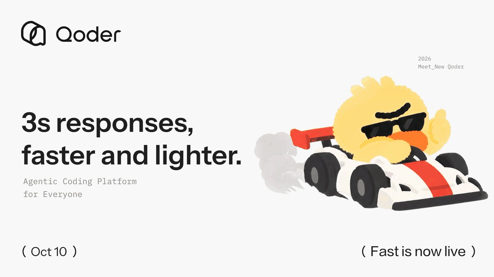

AI Intelligence Daily · 2026-10-11（周日）
专栏一｜新闻
本栏条目：国际 1 · 国内 2。快讯 10-10 已推 PAP、TRAE（用户已知）本期以正式入栏并注明曾快讯推送。Daily 10-10 已收条目窗内无实质新进展 → 不重复灌水。
1. Sierra 公开 Personal Agent Protocol（Poppy）Draft 0.1：个人 Agent↔企业发现/会话/登录 + 35 家 design partners（含 OpenAI）
发生了什么
- Sierra 发布博文 「Sharing a draft of Personal Agent Protocol」，协议草案昵称 Poppy，开放规范站 personalagentprotocol.org（Draft 0.1 Spec，Updated Oct 9, 2026）。
- 相对 10-06 首发伙伴，本轮再宣布 35 家 design partners，含 Adyen、Bank of America、Cloudflare、Mastercard、Notion、Okta、OpenAI、PayPal、Visa、Wells Fargo、Zapier、Zendesk、1Password 等。
- 五块积木：Discovery（
/.well-known/poppy.json）；Sessions；Sign-in（OAuth / 可选代登）；同一会话贯通 API/网站/企业 Agent；企业自选通道（浏览 / OpenAPI·MCP / 公司 Agent）。 - 规范要点：OAuth Client ID Metadata + JWKS；Session Token（DPoP；MCP 例外 Bearer+resource）；Account Token；Direct/Device/Mediated 登录；draft 可破坏性变更；支付/推送等仍为 Open topics。
我的判断
个人 Agent↔企业开放标准第一次落到可读可实现的 Draft 0.1。OpenAI 进 design partners，与 Gemini Agent Identity、Atlassian、Entra、PACT 同屏对照价值立刻上升。仍是 draft，但「可对照实现」门槛已跨过。
往后看
reference implementation / design workshops；稳定版；PACT 合流；Sierra Summit London 10-15。
对智能体互联网
强相关。Discovery、Agent 身份、用户委托、会话跨通道，可映射到 Discovery / Identity / AuthZ / Trust 清单。
对 Work / Agent 引擎
强相关。出站带可验证 agent client；MCP Bearer 例外单独威胁模型；Mediated Sign-In 默认拒或强审计；禁写 Account Token 入 Memory。
建议动作
- 精读 spec §3–4，做 PAP / PACT / Gemini / Atlassian 对照表。
- 试验性发布
/.well-known/poppy.json。 - 盯 reference implementation 与 10-15 London。

来源：Sierra：Sharing a draft of Personal Agent Protocol · Draft 0.1 Spec · X @btaylor · X @SierraPlatform
2. 字节 TRAE：TraeCode × TraeWork 融合为统一 Desktop/三端平台（Agent 模式 + IDE 模式；TraeWork 过渡至 10-23）
发生了什么
- 字节 TraeCode 与 TraeWork 正式合并为统一产品 TRAE：「一个入口、两种模式、三端同步」。
- Agent 模式：跨项目工作台、多 Agent 并行、自动化任务、模板库、统一产物面板。
- IDE 模式：完整智能开发环境，可与 Agent 模式无缝切换。
- 桌面 / Web / 移动 三端；客户端内引导升级并迁移数据。TraeWork 过渡期截止 2026-10-23。
我的判断
国内一线把「办公 Work 端」与「IDE Code 端」收成同一 Desktop/Harness 的明确 shipping。漏报根因是信源表未登记 TRAE——已补入 VENDOR_OFFICIAL。
往后看
灰度全量；10-23 停服；国际站文案；与 Cursor / Claude / Qoder / MiniMax 对照。
对智能体互联网
间接。多 Agent 与跨端会话可观察；暂无开放互联协议一手。
对 Work / Agent 引擎
强相关。双模式切换；多 Agent + 产物管线；旧端 EOL 与数据迁移；Harness 产品化。
建议动作
- 下载新 TRAE 短测 Agent/IDE 切换与产物面板。
- 盯 10-23 停服与灰度全量。
- 对照竞品「工作台+IDE」差异。

来源：docs.trae.cn 融合页 · TraeWork 升级页 · 官方社区 · TechNode
3. 阿里 Qoder 上线 Fast 模式：Performance→Fast（约 3s 首响，Credits 1.1x→0.8x；Desktop ≥0.4.4）
发生了什么
- Qoder 桌面端模式选择器中 Performance 升级为 Fast（国际版自动替换；CN 版新增 Fast 档）。
- 官方对比（国际版）：首响约 8s→3s；Credits 1.1x→0.8x。Desktop 0.4.4+ 首发；其他产品线称将陆续跟上。
- @qoder_ai_ide：「Just dropped: Fast… Performance is now Fast… 1.1x → 0.8x credits」；回复确认「new model — Fast」。
我的判断
兑现「10.10」teaser 的实质是模式/模型档位，不是新 Desktop 产品线发船，不计入 desktop_work_agent_shipping。入栏 A-。
往后看
全系列是否跟上；真实质量差；版本分布。
对智能体互联网 / Work·Agent 引擎
中相关（引擎）。多档位路由与 Credits 系数透明化是 Harness 产品化标配。
建议动作
有 Qoder Desktop 则升到 0.4.4+ 实测 Fast vs Auto；对照自家默认路由策略。

来源：docs.qoder.com · docs.qoder.cn · X @qoder_ai_ide · IT之家
专栏二｜话题热议
- PAP Draft 公开：社区讨论从愿景切到 well-known / DPoP / design partners 名单。
- TRAE 双端融合：国内媒体与社区放大；关心数据迁移与 10-23 停服。
- Qoder Fast：teaser 兑现后讨论 Credits 系数与是否算「新模型」。
- Step 5 Preview：SF Launch Night Oct 22、多渠道一周免费——热议大于新发船。
- MiniMax M3 × Vera Rubin / vLLM：推理栈 continuum，非 Desktop。
- HN：可见 mxc、个人 Agent 对齐、coding agents 工作流等；无一线 Desktop 新发船升格。
互动数字仅在有一手帖时引用；不编造。
专栏三｜开源雷达
| 项目 | 核验点（约 10-11 08:00 CST） | 备注 |
|---|---|---|
| microsoft/mxc | ★2,570，pushed 2026-10-10T23:43:39Z | 相对 23:20 ★2,529 续涨；Codex×MXC continuum |
| openai/math | ★13,670，pushed 2026-10-08T05:20:00Z | CORRECTION 后续涨；history.md 权威勘误源 |
| MiniMax-AI/minimax-code | npm 0.6.8（10-10T20:48Z） | CLI 补丁；Desktop 仍 3.1.1 |
| higress | releases 顶仍 v2.2.5 | 持平 |
| ARTEX | 当局正式结论仍未核到 | 风险跟踪 |
重点事件新进展
Daily 10-10 已报条目窗内无实质 UPDATE → 不灌水。下列仅为有增量 continuum。
UPDATE · Windows MXC continuum
microsoft/mxc★2,570（pushed 10-10 23:43Z）。窗内无新一线 agent 接入 MXC 的官方宣布。
UPDATE · PAP / Poppy
- 相对 Daily 10-10「仍未公开」为实质补收。规范站仍 Draft 0.1；无 reference implementation 新发。
持平不展开：Gemini agent / AgentCorruption / Cyber Mission / GhostAction / 豆包画布 / math CORRECTION / Ant×HSBC。
今天正在形成的趋势
- 个人 Agent 协议从愿景到 Draft：Poppy 可实现字段 + 大厂 design partners。
- 国内 Desktop 合流「工作台 + IDE」：TRAE 双端融合是明确 shipping 样本。
- 模式档位成为产品竞争面：Qoder Fast 用时延与 Credits 系数说话。
- 沙箱/开源容器热度仍在：mxc 星数续涨，新发船节奏放缓。
- 攻防与供应链线进入消化期：窗内无新强 A 披露。
对智能体互联网最值得吸收的东西
- Poppy Draft 0.1：well-known、CIMD、DPoP、Mediated Sign-In——做字段级对照表。
- design partners 名单（含 OpenAI、支付与 IdP）：跨组织「agent 是谁」预演。
- 与 Gemini SPIFFE / Atlassian NHI / PACT 三线并读。
对 Work / Agent 引擎最值得吸收的东西
- 双模式入口 + 产物管线（TRAE）；旧端 EOL（10-23）提醒迁移契约。
- 多档位路由 + Credits 系数透明（Qoder Fast）。
- 出站身份：接企业站/MCP 时默认带可验证 agent client。
值得继续跟踪
- PAP：reference implementation；Sierra London 10-15
- TRAE：灰度全量、10-23 TraeWork 停服、国际站文案
- Qoder Fast：全系列跟上？真实质量差
- Gemini agent 私人预览；MXC 其他 agent 接入
- AgentCorruption / GhostAction / Cyber Mission OSS Scanner
- ARTEX；openai/math 后续勘误
- 到期：GPT-5.5 退役 10-14；RTX Spark 10-16；OpenRouter ElevenLabs 5 折至 10-19；Copilot Default Enablement 10-22；StepFun Launch Night / TraeWork EOL / MCPCon 10-22~10-23；Usage Policy 11-12；Mistral L4 10-31
未来信号
- StepFun SF Launch Night Oct 22（预告）
- Step 5 Preview 多渠道一周免费（运营续）
- Codex composer predictions（Pro beta）——交互向
- MiniMax M3 × Vera Rubin / vLLM（推理栈）
价格 / 订阅雷达
- Qoder Fast：Credits 1.1x→0.8x（相对原 Performance）——模式系数变更，非 API 官价表
- MiniMax Code Bonus Reset Cards：10-10→10-18（延续促销）
- MiniMax M Plan 首月 5 折至 10-14（延续）
- OpenRouter ElevenLabs 5 折至 10-19（延续）
- Anthropic Usage Policy 线索 → 11-12
- 窗内无新的一线 API 官价表变更可核
信源与方法
- 时间窗：2026-10-10 08:00 → 2026-10-11 08:00 Asia/Shanghai。
- 快讯吸收：PAP（11:18）、TRAE（23:20）正式入栏；SILENT 轮 near-miss 仅 Qoder Fast 升格。
- 官方：按
sources/VENDOR_OFFICIAL.mdP0+P1 全检（详见flashes/.scan-2026-10-11-daily.md）。 - 连接器：X
search_posts_all；GitHubgh；WebSearch/WebFetch/curl；国内媒体公开页。 - Desktop 基线：见文首；desktop_work_agent_shipping=1（仅 TRAE）。
- 配图：PAP/TRAE 快讯原文图；Qoder 官方 X 帖媒体；禁止 AI 生成。
- 脆弱面：openai.com/index 403（RSS 可用）；部分 Cloudflare/WAF。